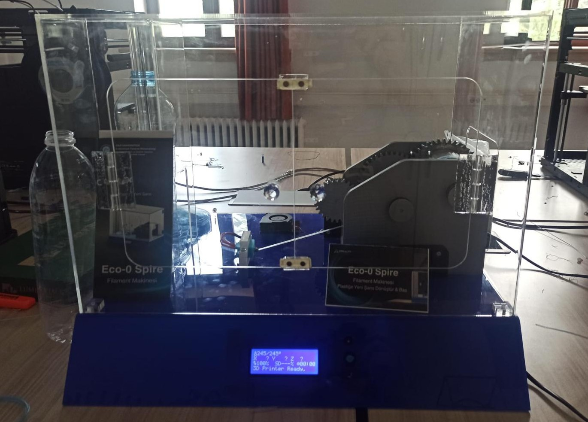
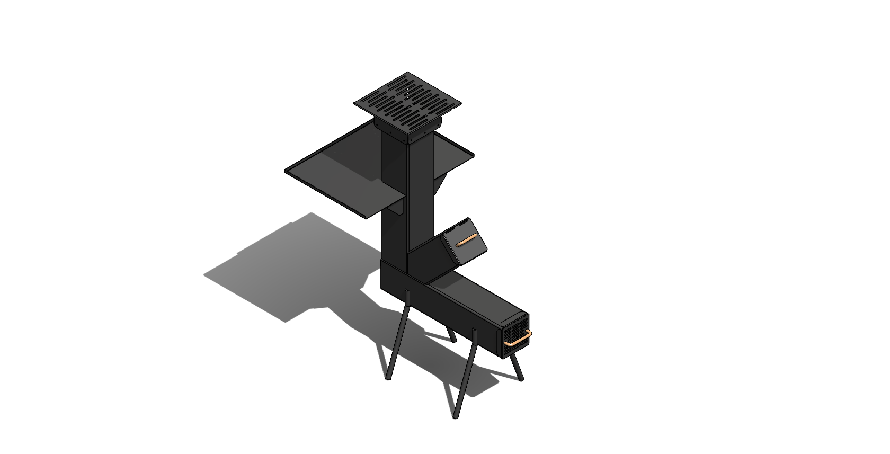

Hakkımda
Elektronik, mekanik tasarım ve üretim teknolojileri alanlarında kendini geliştirmiş; endüstriyel sistemler, 3D yazıcı teknolojileri ve elektronik kontrol sistemleri üzerine çalışmalar yapan bir teknikerim. Tasarım süreçlerinden prototiplemeye, elektronik devre analizinden mekanik geliştirmeye kadar ürün geliştirme süreçlerinde aktif olarak görev alıyorum.
3D yazıcı sistemleri, sıcak uç (hotend) tasarımları, elektronik kartlar, sensör sistemleri ve mikrodenetleyici tabanlı projeler üzerinde çalışarak hem donanım hem de yazılım tarafında deneyim kazandım. Arduino, Raspberry Pi, PCB tasarımı, gömülü sistemler ve teknik arıza analizleri konusunda uygulamalı tecrübeye sahibim.
Eğitim Bilgisi
Buraya mezun olduğunuz okulu, bölümü ve eğitiminiz sırasında odaklandığınız teknik alanları yazabilirsiniz.
Staj / Çalışma Deneyimi
Buraya gerçekleştirdiğiniz stajın veya çalıştığınız firmanın adını yazarak; Ar-Ge, üretim veya bakım-onarım süreçlerinde üstlendiğiniz teknik görevleri belirtebilirsiniz.
Gelecek Vizyonu
Ürün geliştirme, endüstriyel otomasyon ve yenilikçi üretim teknolojileri alanlarında derinleşerek sektörde fark yaratan teknik çözümlere ve kompleks projelere imza atmaya devam etmek.
Eğitim ve Sertifikalar
Mesleki gelişim, endüstriyel yazılımlar ve teknik alanlarda kazandığım belgeler.
Sertifika veya Eğitim Adı
Bu eğitim kapsamında kazanılan teknik yetkinlikler, öğrenilen programlar veya başarı detayları buraya yazılacaktır.
Alındığı TarihSertifika veya Eğitim Adı
Bu eğitim kapsamında kazanılan teknik yetkinlikler, öğrenilen programlar veya başarı detayları buraya yazılacaktır.
Alındığı TarihTüm Projelerim
Geliştirdiğim projelerin detaylarına kartların üzerindeki linklerden ulaşabilirsiniz.

ECO - 0 Spire / Filament Üretim Makinesi
- Atık PET şişeden filament üretme cihazı
- Solidworks ile modelleme
- Keyshot ile render görselleştirme
- Arduino ile devre yazılımı
- Ürün pleksi malzemeden üretilmiştir.

Granül Kurutma Makinesi
- Sac metal dolap + Granül kurutucu tasarımı
- Solidworks sheet metal araçları ile modelleme
- Solidworks ile DXF sac kesim dosyaları
- Autocad ile teknik resim dosyaları